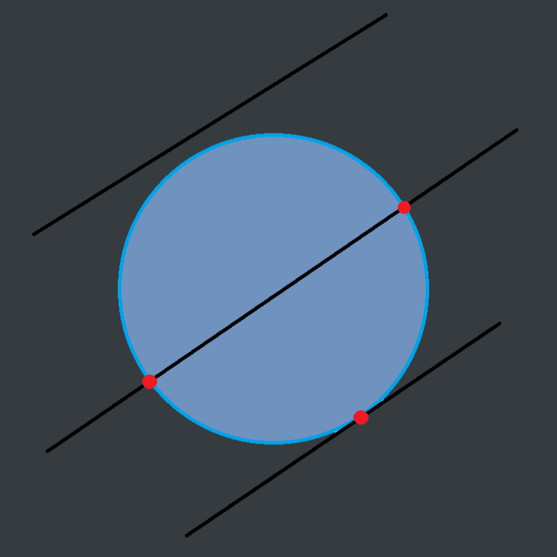

Raytracing in one weekend in C++
GitHub Repository
Welcome to my adventure following the raytracing in one weekend series in C++.
Part 3 (Time for Maths)
Now to add shapes
Let's start with spheres
First we have to talk about Ray-Sphere Intersection
A sphere is the easiest thing to test for an intersection with a ray.
The equation for a sphere of radius r is :
X2 + Y2 + Z2 = r2
This equation is true for the surface of a sphere at the center of the world.
That means that any point for which :
X2 + Y2 + Z2 < r2
is true is inside, and outside for the opposite (>)
Displacing the sphere
If the sphere is not placed at the center of the world and its center is at a CX, CY, CZ then the equation becomes :
(X - Cx)2 + (X - CX)2 + (X - CX)2 = r2
If we simplify this with vectors C the center of the sphere and P the point we want to check
The vector from the center to the point is (P - C)
DOT Product
We can then obtain the formula by doing:
(P - C) * (P - C) = (X - CX)2 + (Y - CY)2 + (Z - CZ)2
Any point P that satisfies this equation is on the sphere.
Do we hit tho ?
We want to know if our ray P(t) = O + td ever hits the sphere anywhere.
That would mean that there exists some t for which P(t) satisfies the equation
(P(t) - C) * (P(t) - C) = r2
which can be found by replacing P(t) by its expanded :
((O + td) - C) * ((O + td) - C = r2
Resolving - Developing
((O + td) - C) * ((O + td) - C) = r2
Remember that we only care for the t related components of the resolution.
(td + (O - C)) * ( td + (O - C)) = r2
t2d * d + 2td * (O - C) + (O - C) * (O - C) = r2
t2d * d + 2td * (O - C) + (O - C) * (O - C) - r2 = 0
Resolving - Quadratic Solve ;)
t2d * d + 2td * (O - C) + (O - C) * (O - C) - r2 = 0
We know the radius and the direction of the ray. The vectors are now scalars thanks to the dot product.
Our only unknown is now t and we have t2.
We can solve for a quadratic equation the question :
What are the times t for which the ray touches the surface of the sphere ?
Quadratic Solve
Where :
- a = d * d
- b = 2d * (O - C)
- c = (O - C) * (O - C) - r2
Now to actually Raytrace
The discriminant is :
0 : 2 real solutions
= 0 : 1 real solution
< 0 : 2 irrational solutions
We will test our code by hard coding the formula
Raytracing.cpp
bool HitSphere(const Position& rCenter, double radius, const Ray& rRay)
{
Vector3 oC = rRay.GetOrigin() - rCenter;
double a = Dot(rRay.GetDirection(), rRay.GetDirection());
double b = 2.0 * Dot(oC, rRay.GetDirection());
double c = Dot(oC, oC) - radius * radius;
double discriminant = b * b - 4 * a * c;
return (discriminant >= 0);
}
Color RayColor(const Ray& rRay)
{
if(HitSphere(Position(0, 0, -1), 0.5, rRay))
return Color(1, 0, 0);
Vector3 unitDirection = Unit(rRay.GetDirection());
double blue = 0.5 * (unitDirection.y + 1.0);
return (1.0 - blue) * Color(1.0, 1.0, 1.0) + blue * Color (0, 0, 1.0);
}